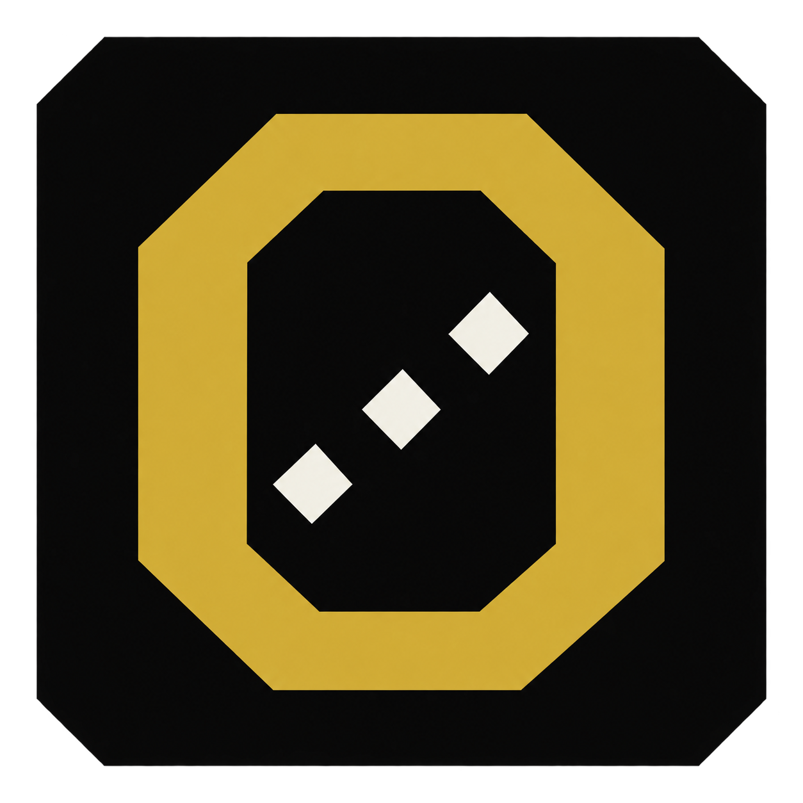
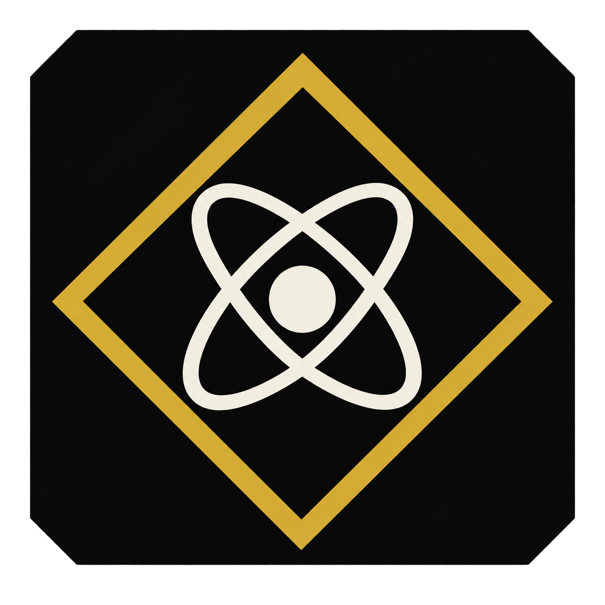
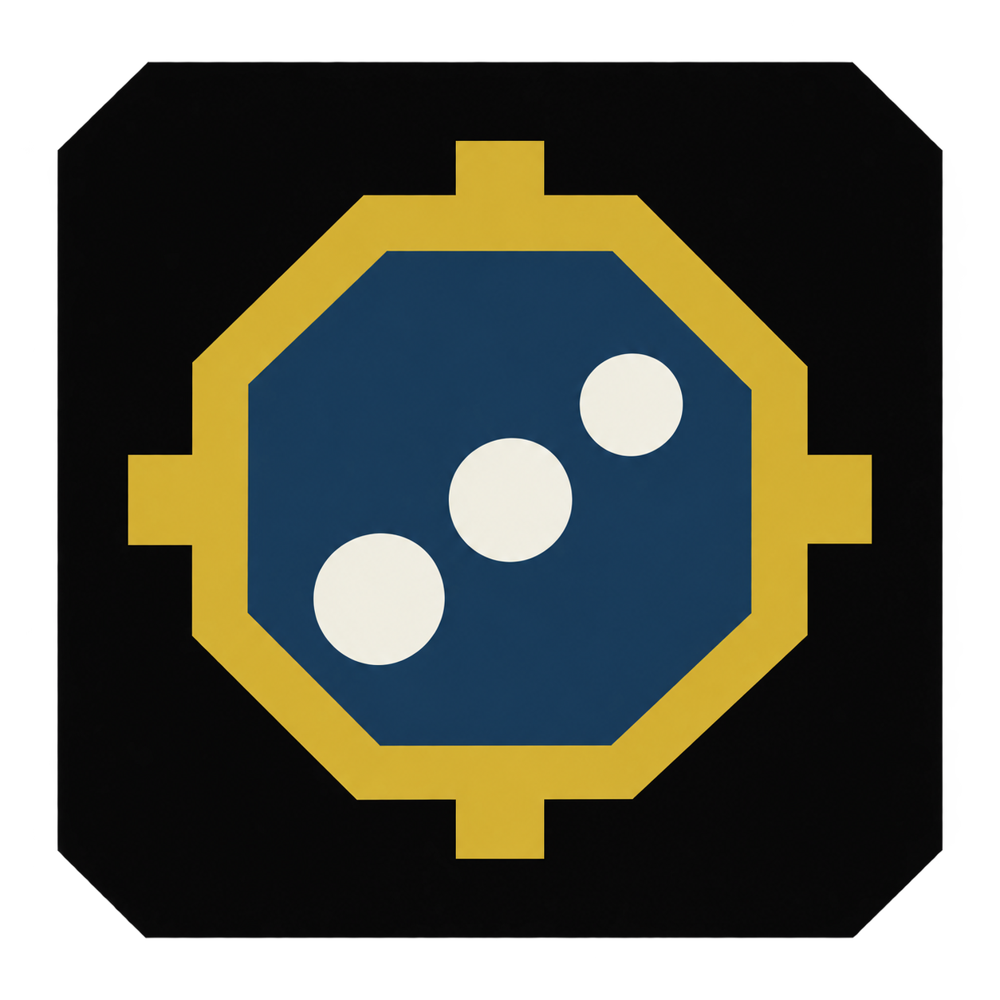
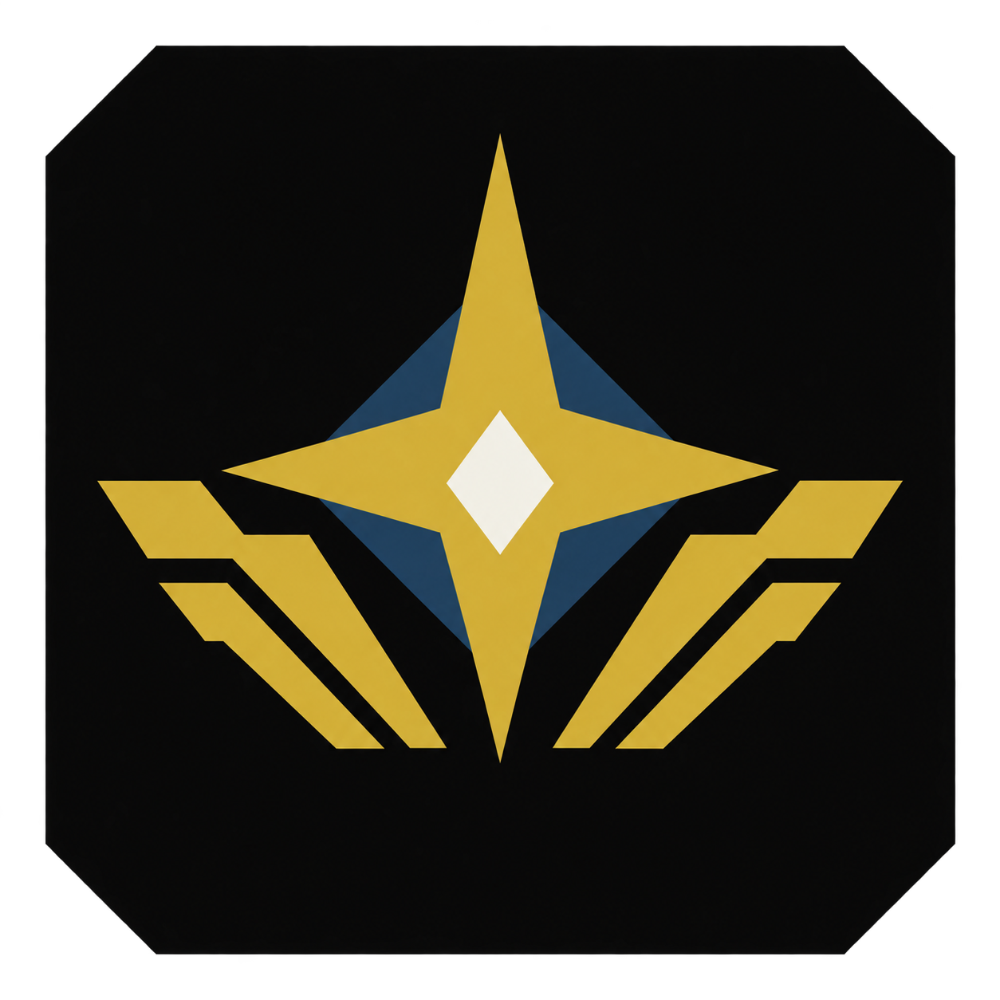

01
Orion Monogram

Octagonal gold O with three ivory diamonds suggesting Orion’s belt. Recommended starting point for its simple silhouette.
Download original PNG ↗
Four directions using the Studio palette. Compare the full mark with taskbar-size previews on dark and light surfaces.

Octagonal gold O with three ivory diamonds suggesting Orion’s belt. Recommended starting point for its simple silhouette.

Diamond frame and orbital nucleus echo the GUI’s current header motif.

Gold nucleus outline, midnight-blue field, and three ivory foci connect directly to microscopy.

Celestial star and stepped wings give the strongest Gatsby architectural character.